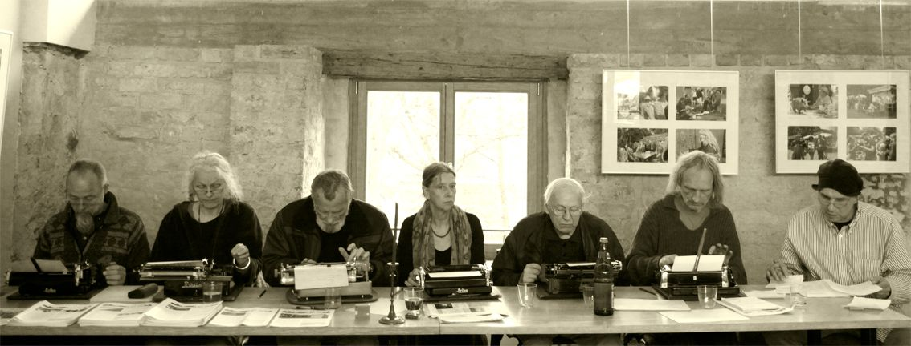
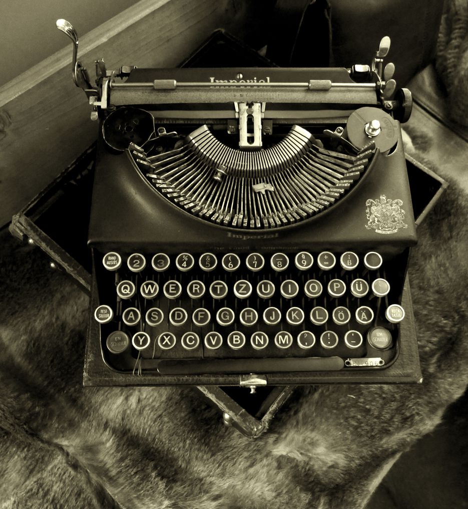

Poetenfrühstück

Das wandernde Poetenfrühstück aus dem Tollensetal und der Umgegend trifft sich seit 7 Jahren monatlich zum absichtslosen Schreiben auf alten Schreibmaschinen. Am 10.5.2015 schrieb es im Westflügel der Burg Klempenow erstmals vor Publikum mit anschließender Lesung auch älterer Texte. Radio Szczecin hat mitgeschnitten und gesendet. Hier nun die Vorstellung neuer und älterer Texte der 7 Schreiber.

mülltrennung
sommerwind über den meereswellen, ein weisses schiff kurz vorm horizont, rosa wolken über allem, schönwetterkumulus. die bilder sind ewig. abendwind, licht, wolken, weite landschaft und hohe berge. schönheit ohne menschen ist völlig natürlich. der schatten eines großen greifvogels gleitet lautlos über den wüstensand. das wasser einer kleinen quelle fällt mit sanftem klang abwärts. restlose schönheit mit allen sinnen aufgenommen und bewertet von mir. die reste der technischen schönheiten, der abfall der industrie, sind schwer zu verkraften. als großer grauer hügel liegt er auf dem acker in der nähe eines urstromtals. als dünger soll dieser abfall der städte verteilt werden auf mütterchen erde. plastfetzen wehen im milden sommerwind und verbrauchte spritzen schimmern im letzten abendlicht. eine alte batterie fällt mit sanften klang hangabwärts. morgen früh, wenn die sonne über dem flusstal aufgeht, wird eine maschine einförmige runden auf dem feld drehen und den grauen berg gleichmäßig verteilen. das ist der lauf der dinge und der weg, den der müll nehmen kann, um auf den meeresboden unterhalb weißer traumschiffe zu gelangen... aber diese wege werden noch erforscht, wissenschaftlich und das kann dauern.
møne spillner